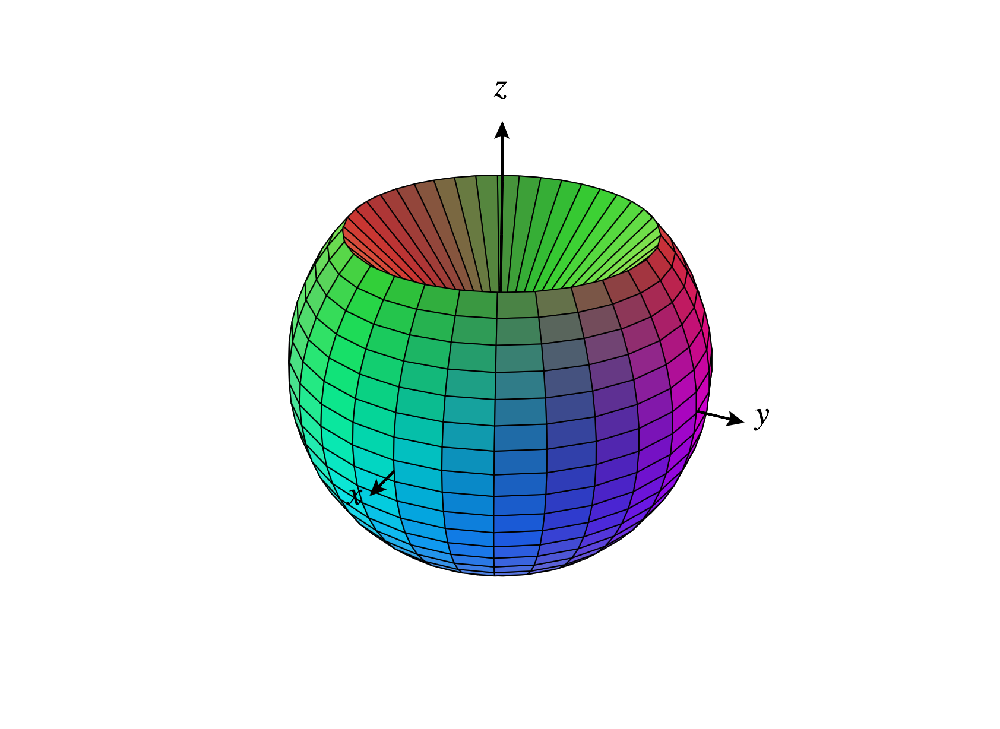
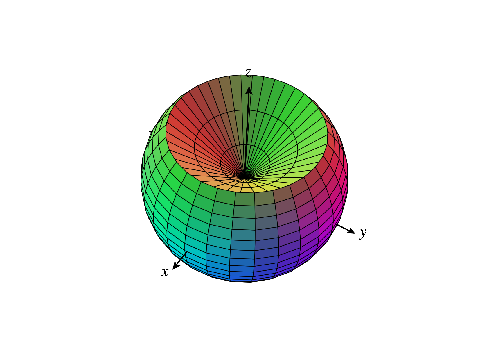
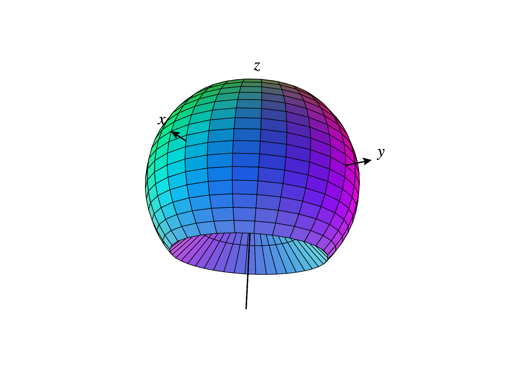

Graded Problems
Consider the surface in described by the equation in cylindrical coordinates.
-
(a)
- Sketch the intersection of this surface with the -plane.
-
(b)
- Given that does not appear in the equation, what can you say about the
surface?
-
(c)
- Sketch the surface.
-
(a)
- Suppose we have a curve in defined by the polar equation , for some
function . What is the relationship between this curve and the curve
defined by in polar coordinates?
-
(b)
- Suppose we have a surface in defined by the cylindrical equation , for some
function . What is the relationship between this surface and the surface
defined by in cylindrical coordinates?
-
(c)
- Suppose we have a surface in defined by the spherical equation , for some
function . What is the relationship between this surface and the surface
defined by in spherical coordinates?
-
(d)
- Again, suppose we have a surface in defined by the spherical equation ,
for some function . What is the relationship between this surface and the
surface defined by in spherical coordinates? Hint: it’s not a rotation.
Professional Problem
Consider the solid below, which is obtained by taking the portion of a solid sphere of
radius which is outside of the (double) cone .



-
(a)
- Is this region easier to describe in spherical coordinates or in cylindrical
coordinates? Justify your answer.
-
(b)
- Describe this region in either spherical coordinates or cylindrical
coordinates (based on your answer to (a)).
Completion Packet
Consider the point , given in crylindrical coordinates. What are the Cartesian
coordinates of ?
Consider the point , given in spherical coordinates. What are the spherical
coordinates of ?
Consider the point , given in Cartesian coordinates. Find all possible ways to write
in cylindrical coordinates.
Consider the point , given in Cartesian coordinates. Find all possible ways to write
in spherical coordinates.
Sketch the graph of the surface in defined by the equation in spherical coordinates,
for .
Consider the surface in defined by the equation in Cartesian coordinates.
Convert the equation to cylindrical coordinates.
Convert the equation to spherical coordinates.
Sketch the surface.
Sketch the region defined by the inequalities , , and in cylindrical coordinates.
Sketch the region defined by the inequalities , , and .
Consider the region defined by the inequalities , , and in cylindrical coordinates.
-
(a)
- Sketch this region.
-
(b)
- Describe this region in spherical coordinates.